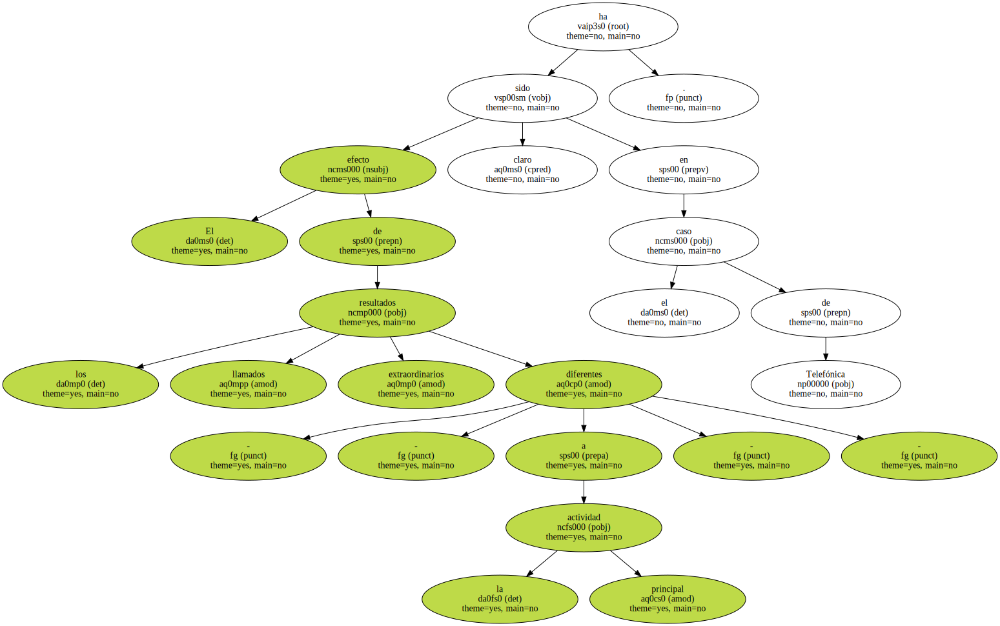
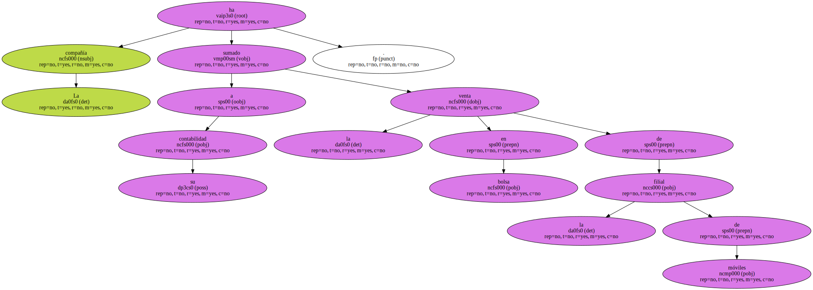
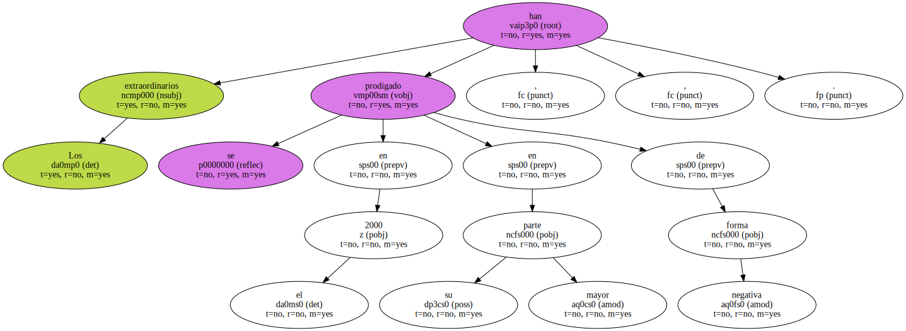
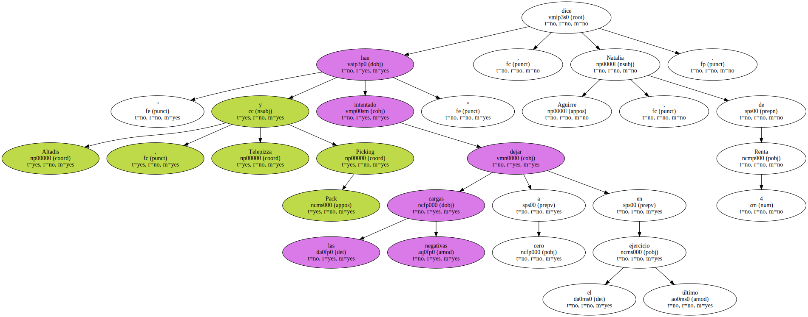
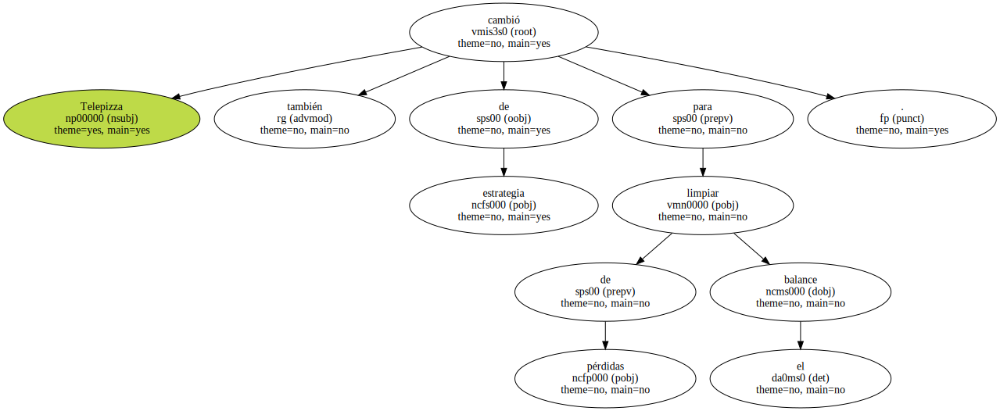

El efecto de los llamados resultados extraordinarios - - diferentes a la actividad principal - - ha sido claro en el caso de Telefónica.
La compañía ha sumado a su contabilidad la venta en bolsa de la filial de móviles.
Los extraordinarios se han prodigado en el 2000 , en su mayor parte , de forma negativa.
" Altadis , Telepizza y Picking Pack han intentado dejar las cargas negativas a cero en el último ejercicio " , dice Natalia Aguirre , de Renta 4.
La tabacalera Altadis llevó a cabo este año una fuerte reestructuración tras la fusión de Tabacalera y la francesa Seita.

Telepizza también cambió de estrategia para limpiar de pérdidas el balance.
